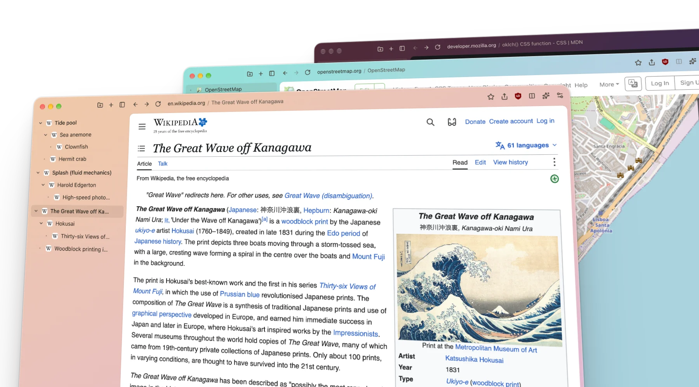
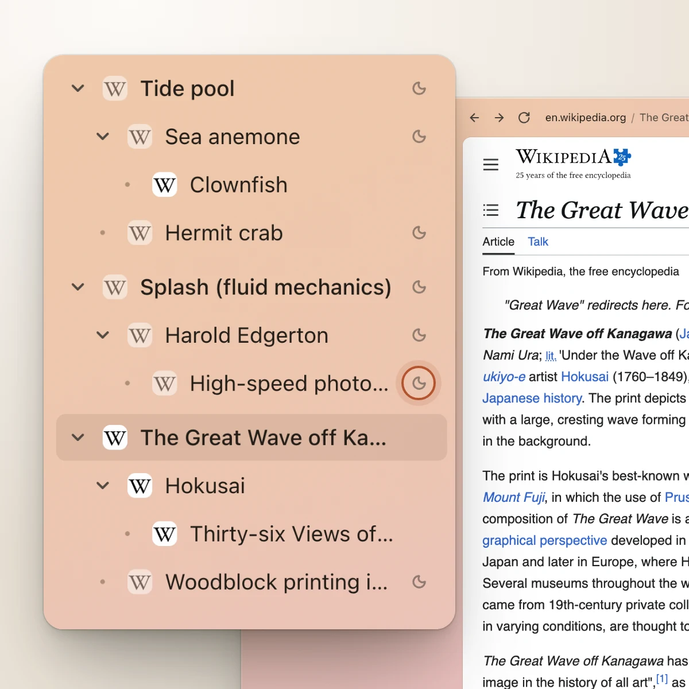
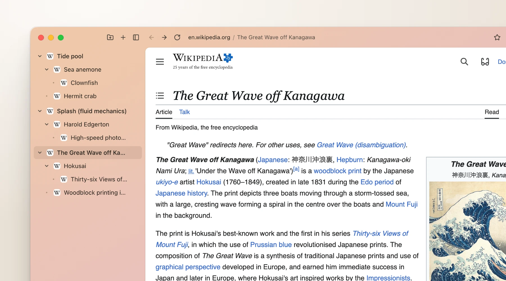
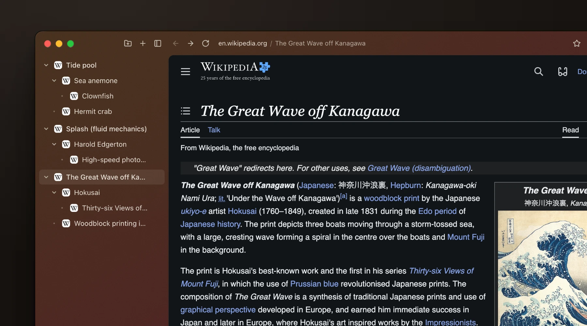

Reading, a trip and the work you're paid for each keep their own trail, colour and light or dark. ⌃1 ⌃2 ⌃3 move between them, and every page stays where you left it.

Three habits that turn a pile of open pages into something you can follow back.
Open a link and it becomes a child of the page you came from. A morning of reading stays a trail you can fold, rename and come back to, not a strip of forty identical tabs.
One search covers open pages in every workspace, bookmarks, history and commands, and ⌘T opens it for a new page too. The selected row says what Return will do before you press it, and Tab narrows it to commands or every shortcut. ⌘K
Put a related page next to the one you're reading. Each workspace remembers its own split, and the trail marks both pages. ⌘\
A place for each thing you're in the middle of, in its own colour and light, and pages that rest while you read elsewhere.
Reading, a trip and the work you're paid for each keep their own trail, colour and light or dark. ⌃1 ⌃2 ⌃3 move between them, and every page stays where you left it.

Pick up to three colours on the canvas, or start from a preset. The frame takes a gradient and a little grain, and text keeps its contrast.
The pages you used last stay awake, twelve to start with and fewer when memory runs short. The rest sleep and wake the moment you open them. A small moon in the trail shows which ones are resting.

Warm charcoal to start with, warm paper when you want it, or follow macOS. A workspace can keep its own, and the websites you open follow along.


Waymarks are short words for the sites you search most. Type one and a space in the address field, and everything after it goes straight to that site's search: w for Wikipedia, gh for GitHub.
These come set up, and any one of them can be your default search.
The Waymarks page lists sites in 19 subjects, from code and maps to news and translation. Add one with a click, or add any site that has a search of its own.
It ships with Splash, so looking through it and adding sites sends nothing anywhere. A Waymark is only a search address with a short word in front.
Alma view draws every page in a workspace as one picture: where each page came from, where it led and which site it's on. When a trail outgrows the sidebar, it still fits on one screen.
In previewOpen it with ⌥⌘G. The sidebar stays live beside it.

Every page, pulled toward the page it came from. Each trail becomes a cluster and the page you're on wears a ring. Start here to see how many things you're in the middle of.

Pages gather around their site. Lines show where a trail crossed from one site to another, so you can see that the GitHub issue sent you to MDN, and MDN sent you to the spec.

Each folder becomes a hub with its trails hanging from it. Trails in no folder float free, which is a quick way to see what you haven't put away.

Docs, code, video, reading, mail and chat, shopping, searches and files, each in its own group. Splash guesses the type from the address alone, so take it as a sorting hint, not a verdict.

Each trail drawn as a tree, read left to right. It's the shape of the sidebar with every branch open at once, so a trail of forty pages reads at a glance.

The workspace sits in the middle, and each ring is one step further from where a trail began. The outer rings are where you went down a rabbit hole.

One page and its family: where it came from, where it led, and the other pages you have open on the same site. Choose one, two or three steps out. Press F on any page to focus on it.
Students, writers and anyone following one topic forty pages down. See which branches you explored, which you dropped halfway, and jump back to any of them.
Docs, issues, answers and specs spread over a dozen sites. Sites and Types show where the afternoon went, and Duplicates finds the docs page you opened three times.
When the sidebar runs long, the map stays short. Heaviest, Asleep and Lone show what's costing memory and what went nowhere, and you can close the lot in one go, with Undo.
Type in the filter and everything else fades back. Matching pages stay bright, the counts beside each folder and type update, and ↵ opens the first match.
Lenses are questions worth one click. Each one is only a query, so using them teaches you the language.
is:duplicateis:heavyis:asleepis:soundis:failedis:lonedepth:>2A lens shows up only when it has something to show. Folders and types work the same way: click one to see only its pages.

Words match titles and addresses, and every term has to hold.
site:github | on a matching site |
folder:reading | in a folder, or folder:none |
type:docs | also code, video, read, social, shop… |
trail:espresso | in a trail that starts there |
depth:>2 | steps from the trail's start |
mem:>300 | using more than that many MB |
is:leaf | pages that led nowhere, or is:root |
is:pinned | also loading, muted, failed, asleep |
-is:pinned | a minus turns any term around |
Pick pages on the map, or press ⇧↵ to pick every match, and a bar offers what you can do with them. Closes and moves are the real thing, and each one comes with Undo.
Drag one page onto another to move it under that page in its trail. Right-click any page for the same menu the sidebar gives you, and point at one for its title, site and note.

Alma settings sit beside the map, and every change shows as you make it.


Every mode, lens and action has a key. Press ? in Alma view for this list, S for settings and Esc to step back out.
Press ⌥⌘G, choose Alma view in the View menu, search for it with ⌘K, or click the map button at the foot of the sidebar. If you'd rather not have the button, right-click it and choose Remove from sidebar. Settings brings it back.
No. The map takes the place of the page you're reading, and the sidebar stays live beside it. Choose a page in the sidebar and Focus moves along with you. Close the map and you're back where you were.
Only from the address: github.com counts as code, a /docs/ path counts as docs, a search results page counts as a search. Splash doesn't read the page to decide, so some pages land in Other.
From the same place as Splash's task manager, refreshed every few seconds. Pages that share a process split its memory between them, so treat small differences as noise.
Alma view is in preview. It isn't in the beta build yet, and it may change before it gets there. Everything shown here is captured from Splash as it runs today.
Splash blocks ads and trackers with uBlock Origin's filter lists, sends every site to HTTPS first, and asks sites not to track you.
The dangerous-site check runs against lists kept on your Mac, so the addresses you visit aren't sent anywhere. Cookie banners are rejected, never accepted on your behalf.
Your workspaces and trails come back either way. Applies from the next launch.
The Home button and ⇧⌘H go here.
Used for anything you type that isn’t a web address.
Sends what you type to your search engine as you type. Full addresses and local sites are never sent.
Type a keyword and a space before your search, like “yt cats”, in the address field or the palette.
google.com/search?q=%s
duckduckgo.com/?q=%s
youtube.com/results?search_query=%s
en.wikipedia.org/w/index.php?search=%s
github.com/search?q=%s
Links you click in other apps open as new pages in Splash.
The signs along your trail. Add a site, then type its keyword and a space to search it, like “imdb dune”, in the address field or the palette. This list is part of Splash, so browsing it sends nothing anywhere.
google.com
google.com
duckduckgo.com
bing.com
search.brave.com
startpage.com
ecosia.org
kagi.com
qwant.com
mojeek.com
metager.de
swisscows.com
search.yahoo.com
yandex.com
baidu.com
search.naver.com
wolframalpha.com
archive.org
web.archive.org
chatgpt.com
claude.ai
perplexity.ai
grok.com
you.com
huggingface.co
youtube.com
music.youtube.com
vimeo.com
twitch.tv
dailymotion.com
ted.com
netflix.com
primevideo.com
crunchyroll.com
imdb.com
rottentomatoes.com
letterboxd.com
themoviedb.org
justwatch.com
myanimelist.net
open.spotify.com
music.apple.com
podcasts.apple.com
soundcloud.com
bandcamp.com
deezer.com
listen.tidal.com
genius.com
last.fm
discogs.com
musicbrainz.org
listennotes.com
reddit.com
x.com
bsky.app
mastodon.social
threads.net
instagram.com
facebook.com
linkedin.com
xing.com
tiktok.com
pinterest.com
tumblr.com
hn.algolia.com
lobste.rs
producthunt.com
medium.com
substack.com
flickr.com
imgur.com
amazon.com
ebay.com
etsy.com
walmart.com
target.com
bestbuy.com
costco.com
homedepot.com
wayfair.com
ikea.com
apple.com
newegg.com
bhphotovideo.com
aliexpress.com
alibaba.com
asos.com
stockx.com
backmarket.com
camelcamelcamel.com
slickdeals.net
github.com
github.com
gitlab.com
codeberg.org
sourceforge.net
stackoverflow.com
stackexchange.com
serverfault.com
superuser.com
askubuntu.com
unix.stackexchange.com
sourcegraph.com
grep.app
codepen.io
dev.to
hub.docker.com
exploit-db.com
cve.org
shodan.io
virustotal.com
urlscan.io
crt.sh
builtwith.com
whois.com
npmjs.com
bundlephobia.com
pypi.org
crates.io
rubygems.org
packagist.org
mvnrepository.com
nuget.org
pkg.go.dev
pub.dev
hex.pm
metacpan.org
archlinux.org
aur.archlinux.org
packages.debian.org
packages.ubuntu.com
search.nixos.org
developer.mozilla.org
caniuse.com
devdocs.io
docs.python.org
doc.rust-lang.org
docs.rs
php.net
docs.djangoproject.com
developer.apple.com
learn.microsoft.com
kubernetes.io
docs.aws.amazon.com
cloud.google.com
wiki.archlinux.org
w3.org
rfc-editor.org
docs.godotengine.org
docs.unity3d.com
explainshell.com
en.wikipedia.org
de.wikipedia.org
en.wiktionary.org
commons.wikimedia.org
wikidata.org
merriam-webster.com
dictionary.cambridge.org
urbandictionary.com
thesaurus.com
etymonline.com
britannica.com
community.fandom.com
wikihow.com
knowyourmeme.com
snopes.com
goodreads.com
openlibrary.org
gutenberg.org
search.worldcat.org
translate.google.com
deepl.com
dict.leo.org
dict.cc
linguee.com
context.reverso.net
en.pons.com
wordreference.com
forvo.com
youglish.com
news.google.com
reuters.com
apnews.com
bbc.co.uk
nytimes.com
wsj.com
washingtonpost.com
bloomberg.com
ft.com
economist.com
edition.cnn.com
npr.org
aljazeera.com
theverge.com
arstechnica.com
wired.com
techcrunch.com
google.com
openstreetmap.org
maps.apple.com
google.com
google.com
booking.com
airbnb.com
tripadvisor.com
en.wikivoyage.org
yelp.com
alltrails.com
wttr.in
zillow.com
allrecipes.com
seriouseats.com
bbcgoodfood.com
epicurious.com
cooking.nytimes.com
healthline.com
webmd.com
mayoclinic.org
drugs.com
linkedin.com
indeed.com
stepstone.de
upwork.com
fiverr.com
weworkremotely.com
dribbble.com
behance.net
figma.com
awwwards.com
unsplash.com
pexels.com
pixabay.com
stock.adobe.com
shutterstock.com
gettyimages.com
fonts.google.com
fontawesome.com
thenounproject.com
lucide.dev
flaticon.com
giphy.com
tenor.com
canva.com
artstation.com
deviantart.com
sketchfab.com
thingiverse.com
scholar.google.com
patents.google.com
arxiv.org
biorxiv.org
pubmed.ncbi.nlm.nih.gov
semanticscholar.org
researchgate.net
jstor.org
nature.com
sciencedirect.com
link.springer.com
ieeexplore.ieee.org
dl.acm.org
oeis.org
mathworld.wolfram.com
khanacademy.org
coursera.org
edx.org
udemy.com
finance.yahoo.com
marketwatch.com
investing.com
seekingalpha.com
morningstar.com
sec.gov
etherscan.io
store.steampowered.com
gog.com
store.epicgames.com
itch.io
metacritic.com
ign.com
howlongtobeat.com
pcgamingwiki.com
protondb.com
steamdb.info
nexusmods.com
minecraft.wiki
boardgamegeek.com
wowhead.com
amazon.de
ebay.de
kleinanzeigen.de
idealo.de
geizhals.de
otto.de
zalando.de
vinted.de
mediamarkt.de
saturn.de
conrad.de
alternate.de
notebooksbilliger.de
thalia.de
obi.de
hornbach.de
shop.rewe.de
dm.de
lidl.de
chefkoch.de
duden.de
dwds.de
test.de
tagesschau.de
spiegel.de
zeit.de
faz.net
sueddeutsche.de
handelsblatt.com
heise.de
golem.de
Extensions can read and change the sites their permissions allow. Only add ones you trust. Some need Chrome features Splash doesn’t have yet, and may not work fully.
Finally, an efficient blocker. Easy on CPU and memory.
Choose which controls appear, and in what order.
Websites follow it too. A workspace’s own theme wins while it’s open.
Sidebar moves the address and navigation above your pages, so the page fills the window.
Each workspace has its own.
Stops sliding and springing in Splash only. Splash already follows the macOS setting.
A row of bookmarks over the page. The sidebar holds the same ones.
Compact fits more pages in the sidebar.
Shows the site after each page’s title.
Minimal drops the branch lines for a chevron or dot beside each page.
Each keeps its own trail and look. Deleting one can be undone with ⇧⌘T.
11 pages
6 pages
6 pages
For sites you haven’t zoomed yourself. Zooming a site with ⌘+ or ⌘− is remembered for that site.
For text a site doesn’t style itself. Open pages reload to apply a change.
No text is drawn smaller than this, even where a site asks for it.
Automatic follows the language you’re typing. A new language applies the next time you open Splash.
To add one, right-click a misspelled word on a page.
Sends every site to HTTPS first. If a site doesn’t accept it, Splash asks before using HTTP. Addresses on your own network aren’t changed.
Encrypts the lookups that turn addresses into servers when your network’s DNS provider supports it.
Checks each address against phishing and malware lists kept on this Mac, so what you browse isn’t sent anywhere. Lists from malware-filter, updated twice a day. Updated 4 hours ago.
Uses uBlock Origin’s filter lists and EasyList, and takes effect as pages load. To allow ads on one site, open its settings from the address bar.
Harmful sites are blocked too.
Rejects cookie banners and hides simple notices. Splash never accepts for you, so a banner it can’t reject stays. Off where you allow ads.
Sends Global Privacy Control and Do Not Track to every site. Some sites must honor it by law; others ignore it.
Stops sites a page embeds or loads from from using their cookies there. Some sign-ins and embedded players need them; allow those per site from the address bar.
Updated today. Splash updates them every week.
Only history follows the time range, and only history can be undone, for a minute.
Addresses suggested as you type, and recently closed pages to reopen.
Signs you out of most sites. All time.
Pages may load a little slower at first. All time.
Sites will ask again. All time.
Files stay on your Mac; only the list is cleared.
Each time you quit Splash. Open pages stay in your trails; clearing cookies signs you out of them.
19 cookies from 5 sites. Deleting them signs you out of those sites.
9 cookies
5 cookies
2 cookies
2 cookies
1 cookie
Sites you’ve allowed or blocked. Others ask the first time they need something.
When you allow or block a site, it shows up here.
A menu appears when you click a field that Splash knows how to fill. Nothing reaches a page until you choose it.
Encrypted with a key in your Keychain. Showing, copying or exporting one asks for Touch ID.
Splash offers to save one after you sign in to a site, or you can bring them from another browser.
For shipping and contact forms.
Filling a card asks for Touch ID, and only happens on secure sites.
Adds to what you have and skips anything already here. Bookmarks go in a folder of their own. The browser can stay open.
macOS keeps other apps out of its folder. In Safari, choose File > Export Browsing Data, then import that file below.
Browsers keep saved passwords where other apps can’t read them, so those come by way of an exported file.
A bookmarks file (.html, .json), a Safari export (.zip) or a passwords file (.csv).
An HTML file that any browser can import.
Splash asks before opening installers and scripts.
Beyond this, your least recently used pages sleep. They keep their place and wake when opened. Pages playing sound or on a call stay awake. When your Mac runs low on memory, fewer stay awake until it recovers.
~/Library/Application Support/Splash
Electron 45.2.3 · Chromium 156.0.8078.80
Licensed under the GNU General Public License, version 3: you may use, study, share and change it under its terms. It comes with no warranty.
Splash has no servers and no account. Apart from the pages you open, this is everything it connects to.
No usage data, no analytics, no browsing history leaves this Mac. Your trails, passwords and history stay in your data folder.
While on, what you type in the address field goes to your search engine. Full addresses and local sites never do. Turn it off in General.
uBlock Origin’s filter lists, the cookie-notice lists and a list of dangerous sites are downloaded and kept up to date. Only the lists are fetched.
To show an icon for a site in your history or bookmarks, Splash may ask that site for it.
Extensions you add from the Chrome Web Store come from Google and update through it. Each extension follows its own privacy policy.
Nothing is ever sent by itself. To report a problem, save a report and attach it to your message.
Versions, your Mac’s model and memory, extensions, crash dates and recent errors. Addresses show only the site.
None on this Mac.
Splash is built on these, under their own licences.
By Raymond Hill and contributors, GPL-3.0. Included with its cookie-notice lists removed.
MIT, BSD and other open-source licences.
React, Zustand, Zod, the Ghostery blocker and others: MIT, ISC, MPL-2.0 and Apache-2.0.